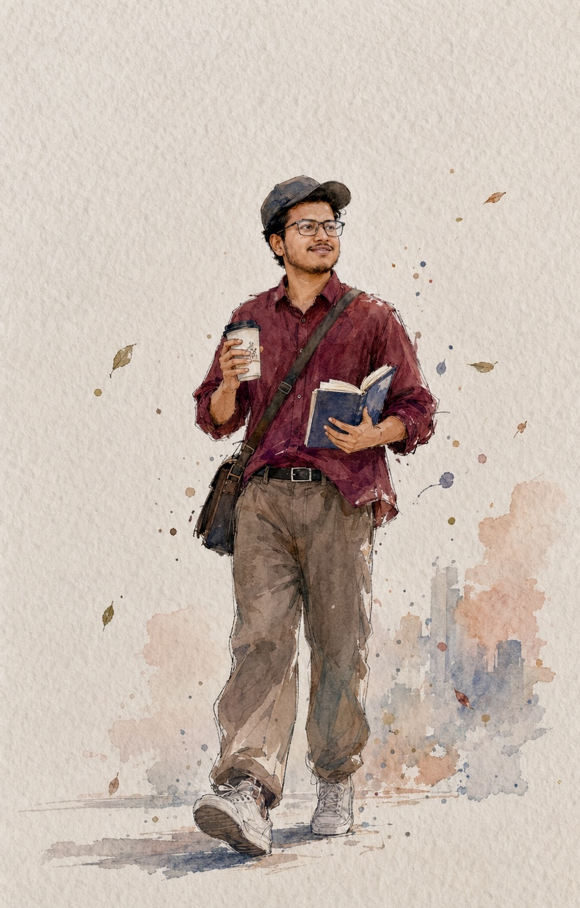

🎓
MBBS
Bachelor of Medicine, Bachelor of Surgery.
Committed to thoughtful clinical practice, continuous medical learning and patient-centred care.

Continuous learning. Careful assessment. Clear communication.
I am a medical professional with an MBBS degree and BCS (Health) background. I previously served as a Registered Medical Officer (RMO) at Upazila Health Complex, Bhangura, Pabna.
My training includes a Diploma in Medical Ultrasound (DMU), and I am undertaking a Diploma in Cardiology course at Bangladesh Medical University, Shahbag, Dhaka. My professional interests include Internal Medicine, Cardiology and Diagnostic Ultrasonography.
This website introduces my professional background and areas of interest, and will also serve as a space for medical education and professional updates.
Academic and professional credentials.
Bachelor of Medicine, Bachelor of Surgery.
Bangladesh Civil Service — Health.
Diploma in Medical Ultrasound.
Course at Bangladesh Medical University, Shahbag, Dhaka.
Bhangura, Pabna, Bangladesh
Experience within the public healthcare setting, with a focus on clinical assessment and general medical care.
Shahbag, Dhaka, Bangladesh
Medical registration details supplied for this professional profile.
Topics of ongoing professional development.
Clinical reasoning, assessment and evidence-informed management of medical conditions.
Ongoing learning in cardiovascular medicine, ECG interpretation and cardiac care.
Ultrasound as a tool to support clinical assessment and diagnostic decisions.
For professional enquiries, medical education collaboration and correspondence, use the contact options here.
⚕ Medicine · Science · Humanity